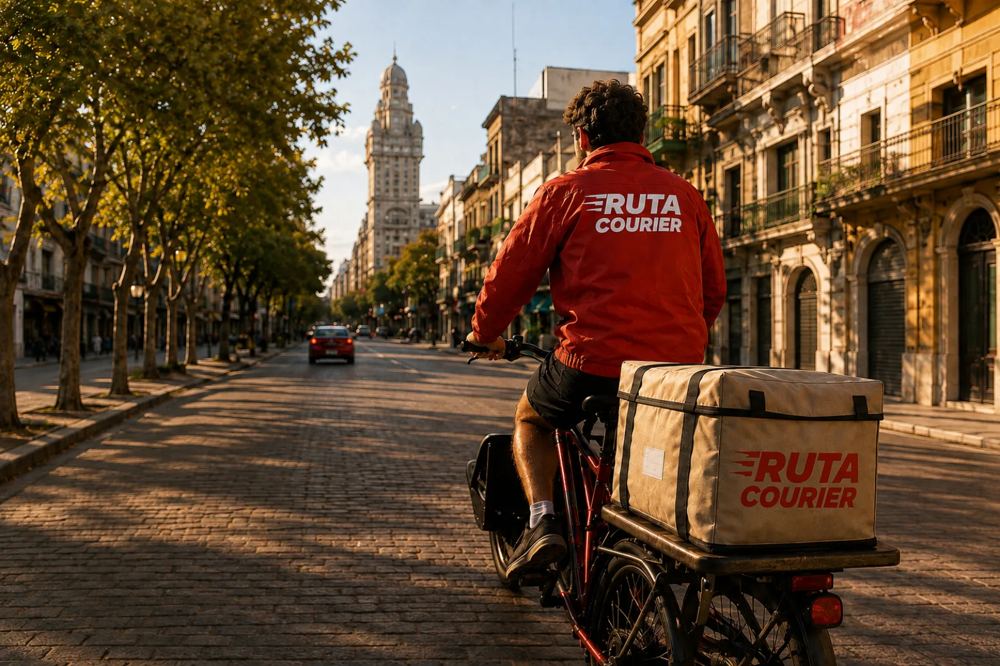

Ruta Courier collects finished print work and delivers it to whoever ordered it.
Zones and rates
| Zone | Covers | Cut-off | Standard | Express |
|---|
Collection windows
Book at least one working day ahead. When a window is full we say so instead of sending a van that is not there.
On the road
| Parcel | Status | Due |
|---|
House terms
- Delivery legs only. We move finished work and we do not make it.
- The mission has to carry a signed print leg and a delivery zone.
- One parcel under 25 kg. Heavier jobs are split and priced per parcel.
- Collection is booked at least one working day ahead. We do not collect on Sundays.
What we do with a baton
We read the copy count off the legs already signed and work out the weight, the number of parcels and the day it lands. We check that against the money left and the deadline before taking the job, sign our leg with our own key, and hand back a tracking id that outlives the link.